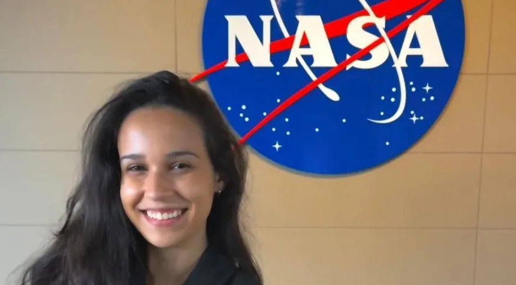

Brasileira de 21 anos treina para se tornar astronauta nos EUA
por: Nickolas Lira
20/03/2023 14:07

Brasileira de 21 anos treina para se tornar astronauta nos EUA
Luisa Leão, nascida no Rio de Janeiro de 21 anos, está treinando para se tornar astronauta nos Estados Unidos Estudante do curso de Engenharia Mecânica do Centro Técnico Científico da PUC-Rio, Luisa ingressou no International Institute for Astronautical Sciences (IIAS), no estado de Oklahoma. ela participou do processo seletivo e foi aceita no(IIAS), Em entrevista ela conta "Eu estudei em escola pública até conseguir uma bolsa de estudos para o Ensino Médio, e posteriormente para a PUC-Rio. Se não fosse isso, minha família não teria condições de arcar com os custos de uma educação de qualidade para mim. É por isso que eu sei o quanto oportunidades como essa são valiosas para quem quer ter acesso, mas não possui condições", "Eu estudei em escola pública até conseguir uma bolsa de estudos para o Ensino Médio, e posteriormente para a PUC-Rio. Se não fosse isso, minha família não teria condições de arcar com os custos de uma educação de qualidade para mim. É por isso que eu sei o quanto oportunidades como essa são valiosas para quem quer ter acesso, mas não possui condições”, contou a jovem, seu sonho é participar da missão a marte “A humanidade já foi muito longe chegando à Lua, porém, no momento em que colonizarmos Marte, nos tornaremos uma população interplanetária e reduziremos significantemente o risco de extinção da nossa espécie.”


Gostei muito da história da luisa, que ela consiga ir a marte.

Muito bom a matéria, quando eu era pequeno gostava de ver os astronautas

Nossa! Esse INEP fica mudando as datas e quebrando nosso planejamento! Aff.